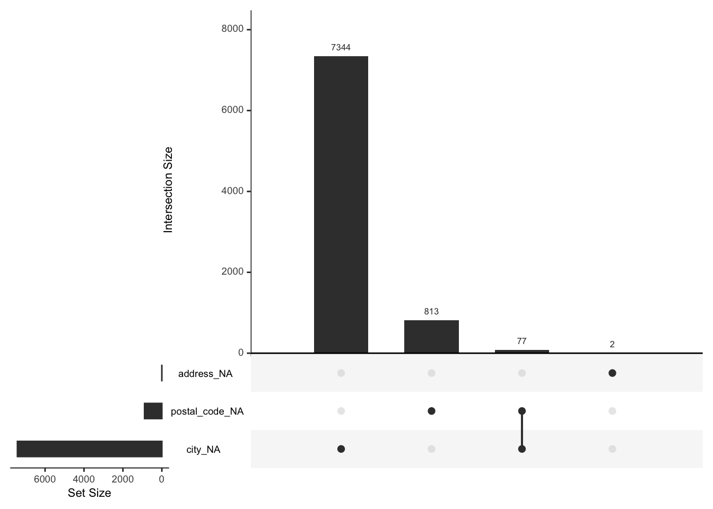

State of Data
This document describes the current state of the available data in the ESMEE project. Given that we continuously add and improve upon the data we create this webpage, so that we can easily update the information and ensure we all have the latest information.
In short the datasources we currently have are:
| Type | Source | Time frame | Regionalised | Ecosystem Element |
|---|---|---|---|---|
| Patents | Regpat/Lens.org | 1800-Today | Yes - by hand | Networks, Knowledge, Talent, Leadership |
| Publications | Lens.org | 1800-Today | Yes - by hand | Networks, Knowledge, Talent, Leadership |
| European Projects | EU | Fp1-2024 | Yes | Networks, Knowledge, Leadership |
| Keep/Interreg | EU | Yes | Networks, Knowledge, Leadership | |
| Startups | Crunchbase | 2010-2024 | Yes | Culture, Finance |
| Subsidies | RVO | by hand | Formal Institutions | |
| News | NPO | 2010-2024 | by hand | Culture, Leadership, Demand, Formal Institutions |
| Trademarks/designs | EU | by hand | Culture | |
| Eco-label | EU | by hand | Culture |
Patents
Patents are used as an indicator of technological innovation. Each patent family contains information on a specific invention that at the time of submission was new to the state of the art. When all patent information is aggregated into a database we have a valuable source of knowledge on technological innovation.
Summarizing the data available in patents and all the research questions we can answer with patent is quite complicated. A limited answer to this question would be: Patents allow us to measure and understand who developed (inventors/assignees) which technologies (classifications, text), where (Address of inventors and assignees) and based on what knowledge (citations).
There are many complexities and limitations to this data which we will not describe here (there is just too much to address).
What data do we have
For the measurement of technological innovation, we use two patent databases. The first is REGPAT which is provided by the OECD and the patents are already regionlised. The second is lens.org
How are regions attributed to a patent? There are two ways to attribute a region to a patent document. First we can look at the address of the patent applicant. If the applicant has supplied an address on the patent we can use it to attach a region to the patent. The second method is to use the address of the inventor. In scientific research the address of the inventor is usually used to regionalize a patent. The reasoning behind this is that we want to approach the region in which the knowledge is located. The inventors usually live close to the place where they work and hence where the knowledge is created. Companies on the other hand can file patent on behalf of subsidiaries in other countries. Actually, there are many fiscal incentives for companies to have other structures file and manage the patents for them. Depending on the level of detail supplied this is more or less easy. In RegPat this work has been done for us. Each patent document has a nuts3 code attached to it. Note: the RegPat database only has patents that went through the EPO, WIPO, or JPO. A patent filed by a Dutch Company at the DPO or even GPO/FPO will not be present in this database. Other than the restrictions per office, there are not limits to the geographical origin of the inventors or the applicants.
Caution: A patent can be filed in different offices at the same time, there is a difference between a patent family and a patent document. One cannot simply count the number of patents in a region, we need to take into account that we are over evaluating the number of patents in the region if we do not regroup them at the family level.
We have the following data distribution of the patents:
companies_new_per_year = regpat %>% group_by(app_name_harmonised) %>% summarise("first"= min(year), "last"= max(year))
companies_new_per_year = companies_new_per_year %>% group_by(first) %>% summarise("freq" = n())
couleur = "#4CAF50"
p = ggplot(companies_new_per_year, aes(x = first, y = freq)) + geom_bar(stat = "identity", fill = couleur) +
xlab("") + ylab("") + theme(
text = element_text(size=10),
plot.title = element_text(hjust = 0.5),
panel.background = element_rect(fill = "transparent"), # bg of the panel
plot.background = element_rect(fill = "transparent", color = NA), # bg of the plot
legend.background = element_rect(fill = "transparent"), # get rid of legend bg
legend.box.background = element_rect(fill = "transparent")) +
scale_y_continuous(breaks = seq(0, max(companies_new_per_year$freq), by = 100)) +
scale_x_discrete(breaks = seq(2010, max(companies_new_per_year$first), by = 1))New companies with patents per year:
geographical distribution of patents in the Netherlands
patents per 100 companies per province
plot(p)Warning in st_point_on_surface.sfc(sf::st_zm(x)): st_point_on_surface may not
give correct results for longitude/latitude data
players per province
Warning in st_point_on_surface.sfc(sf::st_zm(x)): st_point_on_surface may not
give correct results for longitude/latitude datapatents per province per year
patents per year per province
geolocalisation of patents in NL
Missing value analysis
# missing values with the naniar package
library(naniar)
Information in the patent database
Patents contain a variety of variables that we can use for the analysis of innovation and entrepreneurship. Summarizing the data available in patents and all the research questions we can answer with patent is quite complicates. A limited answer to this question would be: Patents allow us to measure and understand who developed (inventors/assignees) which technologies (classifications, text), where (Address of inventors and assignees) and based on what knowledge (citations).
All this data sounds great, but patents are a complex data source and not all information is perfectly available. In the following table we summarise the different fields of interest in patent data.
| Category | Field | Description |
|---|---|---|
| Dates | Priority | |
| Application | ||
| Publication | ||
| Applicants | App_name | |
| Assignees | ||
| Owners | ||
| Inventors | ||
| Classifications | IPC | International Patent Classification |
| CPC | Cooperative Patent Classification | |
| USC | ||
| Identifiers | App_nbr | Application number |
| Appln_id | Internal patent number | |
| Person_id | Internal applicant number | |
| Pub_nbr | Publication number | |
| Pct_nbr | Wo application? Number | |
| Internat_appln_nr | ||
| Localisation | Address | Full address as written by the assignee (or the inventor) |
| City | City of the assignee (or inventor) | |
| Postal_code | Postcode of the assignee (or the inventor) | |
| Reg_code | NUTS-3 | |
| Ctry_code | Iso 2 country code | |
| Reg_share | Share to attribute to each region on the patent. When multiple assignees are on the patent, and they come from different regions, we only assign a fraction of the patent to the region. 2 regions = 0.5, 3 regions = 0.333 etc. | |
| App-share | When multiple assignees on the patent, we attribute a fraction of the count to the assignee. When there are two assignees we only count the patent as 0.5 for the assignee. |